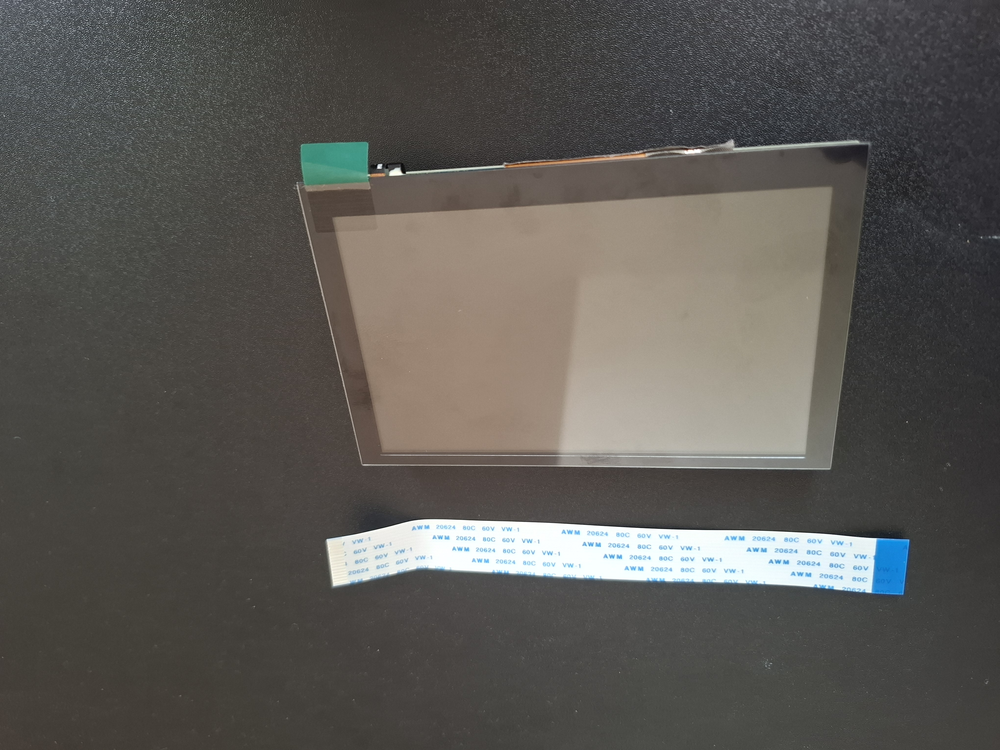
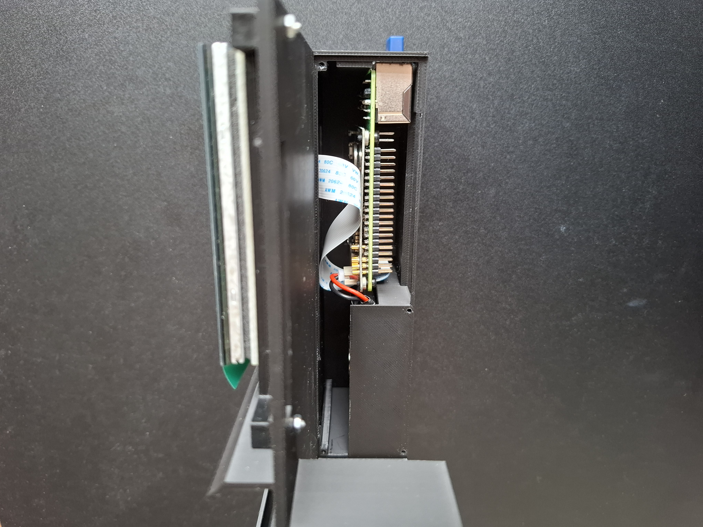

CyberDeck
A cyberdeck is a custom-built, portable computer, often combining a single-board computer (e.g., a Raspberry Pi), display, keyboard, battery, and peripherals (e.g., camera, speakers) into a single, purpose-driven unit. Cyberdecks are often inspired by cyberpunk aesthetics.
In this project, I will be creating my first version of a cyberdeck. This first version will not particularly be a complex one since its the first one. The aim here is “Be as simple as possible”.
Since my first priority is simplicity, I will be skipping anything that require soldering, unless its absolutly necessary. I will be also settling for a straight forward case with an attempt to make it look cyberpunky.
Materials
Materials used in this project:
- Raspberry Pi 4B
- Battery with a 5v/3A output
- 5 inch display
- Keyboard
- Case: was 3D printed
Raspberry Pi
This is a Raspberry Pi 4B with 4GB LPDDR4 RAM, supports WiFi and Bluetooth, Gigabit Ethernet, two USB 3.0 and two USB 2.0 ports. It also contains dual micro HDMI and a USB-C power port and 40 pin GPIO header which I will be relocating in this Cyberdeck (See Assembly).

Battery
Starting with the power supply, depends on which battery you choose, you will have different configuration. In my case I chose the 5000 mAh PiSugar 2 plus battery.


As seen in the pictures above, this battery allows me to connect the PCB board directly on the Pi itself from below, and placing the battery on the PCB board stabilizing it with a magnet. However, I will be putting the battery itself next to the Raspberry Pi, rendering the magnets useless.
Display
For the display I am using the Waveshare 5-inch DSI touch screen with 800 x 480 resolution.


Keyboard
I used the Rii X1 Mini Wireless Keyboard with a Touchpad.

Case: 3D Printed
Here you can find the STL files, feel free to use and modify them.
Obviously, as this is the first version and my first time doing such thing, the case is not the most fancy, it is a regular streight forward lame one with some flaws but it does the job! More sofisticated versions will be created in the future.
Assembly
Pi & Battery
It is a bit narrow while assembeling it but it works. You have to connect everything outside and put all the parts in one go.
In the first picture below, you can see the battery wires are going to the left, there the battery will sitting minding its own buissnes.
For the Pi and the Pisugar PCB board, on the inner side (you cant see it here), there are two wholes to screw it in its place.


In the picture on the right you can see the display serial interface ribbon cable (flat-flex cable/FFC) going threw an opening to connect on the other side with the display.
Keyboard & Display
Here as you can see the keyboard is inserted from the side and then secured by this small printed piece (see Pic.1). A side view is shown in Pic.2 of how this piece would look like.
For the display it is mounted on a mount printed for this diplay specifically, that is then mouted on the main deck with four screws as seen in Pic.1.


GPIO pins
The purpose of the opening that you can see next to the sceen, is to relocate the GPIO pins to have access to them in a convienient way. In the pictures you can see how it would look.


End Result
Here you can see the end result from all sides.
As you can see there is no buttons is this project, I just kept an opening to the Pisugar buttons. There is a button on the PCB of the Pisugar that you can configure and for now I confugured it to shutdown when double clicked.
To turn on the Pi also on the PCB of the Pisugar there is an ON/OFF switch that when tured on will start the Pi.


Pushing these buttons with your finger can be annoying, so using a screw driver like the one shown in the picture or any pen works fine.


Limitations & Future Fixes
As this is the first version